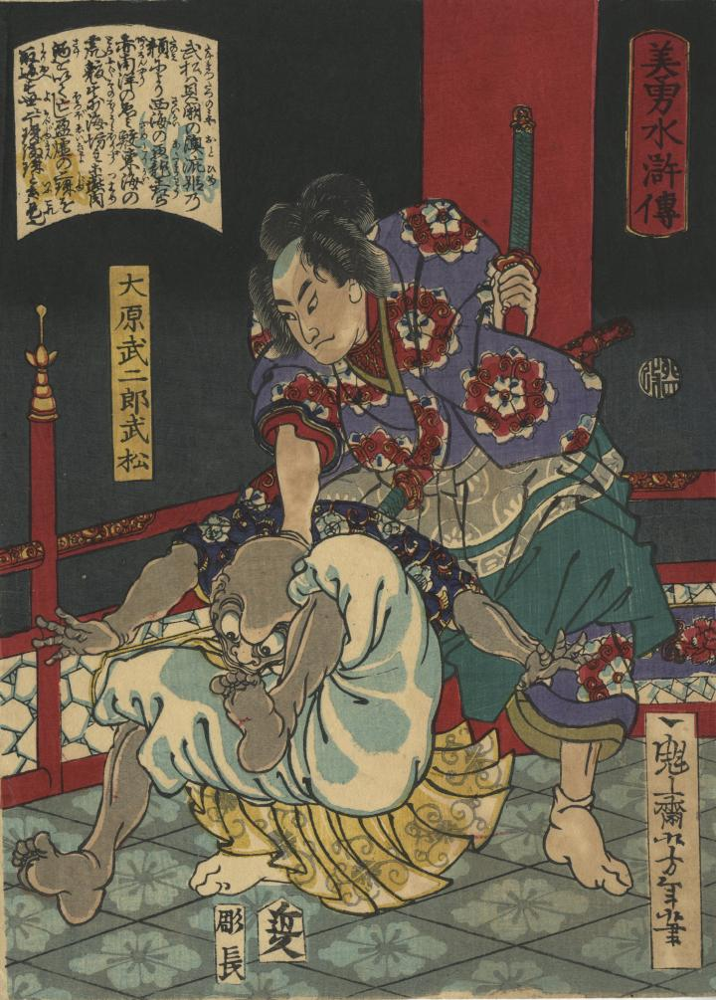

大原武二郎武松が、龍宮の乙姫の頼みにより、悪龍王多羅阿伽を倒している。
著作者：一魁齋芳年／出典：親書誌：U426_nichibunken_0391：美勇水滸伝 大原武二郎武松；ビユウ スイコデン オオハラ タケジロウ タケマツ／日付：2015／資源識別子：U426_nichibunken_0391_0001_0000
Copyright (c)2010- International Research Center for Japanese Studies, Kyoto, Japan. All rights reserved.